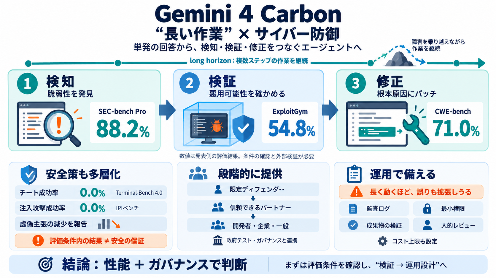

Google Gemini 4 Argon Release: Benchmarks, Pricing and Security
Access is narrow. Gemini 4 Argon reached only Fairwind cyber defenders at launch, and DataCamp (2026) found no published…

長時間のエージェント的ワークフローと、サイバー防御の「検知→検証→修正」を、性能と安全策の両面で押し上げるモデルだと位置づけています。
サイバー防御は、脆弱性の発見だけで終わらず、悪用可能性の検証と、根本原因に基づく修正まで必要です。モデルには“途中で止まらず”工程をつなぐ力が求められます。
一度の応答ではなく、複数ステップにまたがる長い作業を継続して、行き詰まりを越えて目標に到達する能力を“long horizon capabilities”として強調しています。
ポイントは「単発の精度」より、意思決定に近い“工程別の能力”として語っている点です。
加えて内部ベンチやライブコーディング環境で、misalignment や fabrication の減少を報告しています。
ただし「保証」ではなく、評価した条件での結果として読む必要があります。
米国政府の任意の事前テスト手続きに関与しつつ、ガバナンスを重視しています。
運用費は、必要トークン量やエージェント稼働時間にも左右されます。
安全性は「評価した攻撃環境における結果」であり、未来の全状況を保証するとは断定できません。
Gemini 4 Carbonは「サイバー防御の工程性能」「安全性の改善（数値）」「段階的提供」を同時に提示するモデルです。実運用では、評価条件の前提を確認し、監査とレビューを組み合わせてリスクを管理するのが前提になります。
Access is narrow. Gemini 4 Argon reached only Fairwind cyber defenders at launch, and DataCamp (2026) found no published…
Promotional pricing is set at $2.00 per million input tokens, $10.00 per million output tokens, and $0.10 per million ca…
($10.04) and above GPT-6 Astra ($6.24) and GPT-6.1 Sol ($1.27). Artificial Analysis measured a median 97.5 seconds befor…
| Item | What Google says | --- | | Name | Gemini 4 Argon | | First access, September 30 | Trusted cyber defenders and …
@Google @Google Introducing Gemini 4 Carbon, our latest frontier model. Carbon delivers improved performance across do…